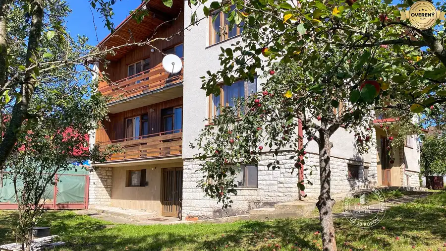
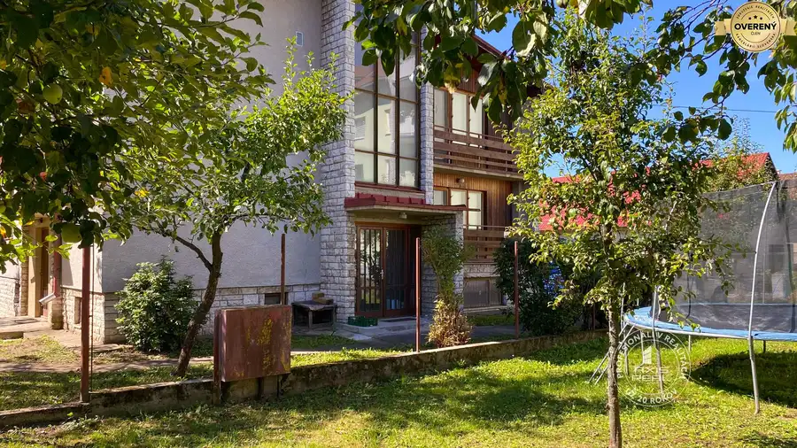
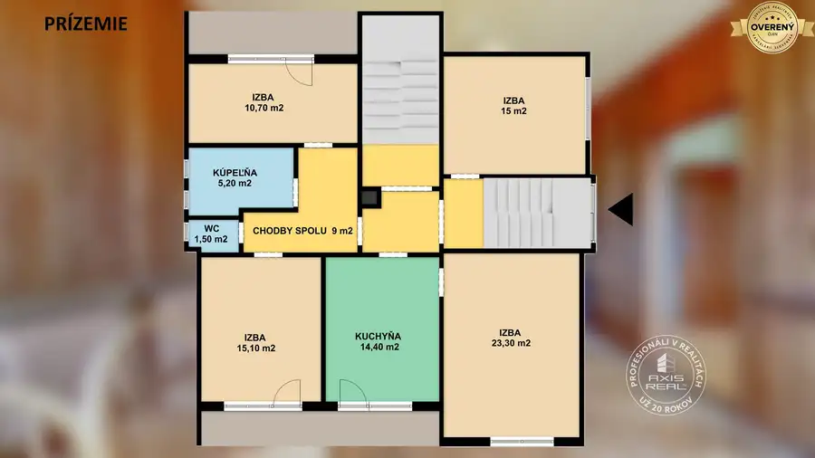
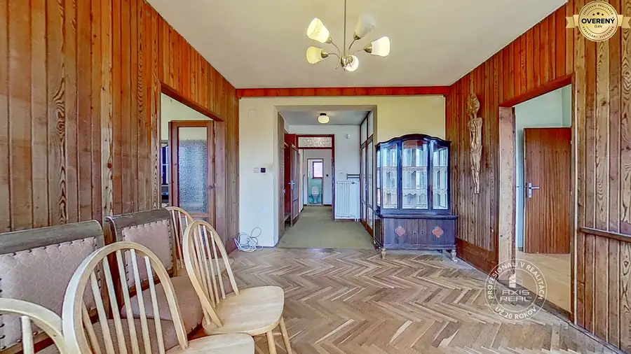

Priestranný dom na bývanie aj podnikanie, Stará Ľubovňa
Stará Ľubovňa





- Dispozícia9-izbový
- Plocha320 m²
- Poschodie0. z 2
- Stavpôvodný
- Vlastníctvoosobné
O nehnuteľnosti
POPIS DOMU:
Realitná kancelária AXIS REAL ponúka exkluzívne na PREDAJ dvojpodlažný murovaný RODINNÝ DOM v pokojnej a zároveň vyhľadávanej časti mesta Stará Ľubovňa, na Ulici 17. novembra.
Nachádza sa na pozemku s celkovou výmerou 780 m2, ktorý poskytuje dostatok súkromia, priestoru na oddych aj ďalšie využitie podľa vašich predstáv. Nehnuteľnosť je kompletne podpivničená, pričom súčasťou suterénu je aj dvojgaráž, čo ocení nielen rodina, ale aj podnikateľ.
Rodinný dom bol skolaudovaný v roku 1982 a každé podlažie disponuje veľkorysou úžitkovou plochou, čo zaručuje komfortné bývanie aj pre viacčlennú rodinu alebo kombináciu bývania s podnikaním.
Na prízemí rodinného domu sa nachádza: chodba, kuchyňa s jedálňou, štyri obytné izby, kúpeľňa, samostatné WC a 2x lodžia; na poschodí je k dispozícii: chodba, kuchyňa, jedáleň, štyri obytné izby, kúpeľňa, samostatné WC, 2x lodžia. Suterén poskytuje množstvo úložného a technického priestoru – nachádzajú sa tu skladové priestory, pivnica, práčovňa, kotolňa, chodba a priestranná dvojgaráž.
Výhody:
❶ Veľkorysý dvojpodlažný dom vhodný na pre bývanie aj podnikanie
❷ Kompletné podpivničenie – ideálne na skladovanie, dielňu resp. ďalšia bytová jednotka
❸ Dvojgaráž + ďalšie parkovanie na pozemku
❹ Výborná lokalita
❺ Možnosť rozdelenia na viac bytových jednotiek (investičný potenciál)
❻ Veľký pozemok – priestor na záhradu, oddychovú zónu alebo ďalšiu výstavbu
❼ Ideálna kombinácia bývania a podnikania na jednom mieste
STAV DOMU:
Nehnuteľnosť sa nachádza v udržiavanom stave, čo predstavuje ideálnu príležitosť pre nového majiteľa prispôsobiť si ho presne podľa vlastných predstáv a potrieb.
Nakoľko má tri samostatné vchody ponúka nehnuteľnosť široké možnosti využitia – od komfortného viacgeneračného bývania, cez rozdelenie na tri samostatné bytové jednotky, až po polyfunkčné využitie (napr. kancelárie, ambulancia, služby či prenájom).
Bonusom je ďalší pozemok pred domom o výmere 363 m2, ktorý poskytuje priestor na parkovanie, oddychovú záhradu alebo aj ďalšie rozšírenie či investičný zámer. Podľa územného plánu je určený na obytnú zástavbu s možnosťou zastavanosti až do 50 %, čo ponúka široké možnosti využitia.
LOKALITA:
Dom sa nachádza v pokojnej a príjemnej časti mesta Stará Ľubovňa, odkiaľ máte na dosah všetko čo potrebujete, kompletná občianska vybavenosť, obchody, služby, základná škola, gymnázium, kultúrny dom.
Lokalita je ideálna pre rodiny aj podnikateľov, ktorí chcú mať všetko poruke.
Nezmeškajte túto jedinečnú príležitosť spojiť komfortné bývanie s investičným potenciálom v atraktívnej lokalite. Kontaktujte nás ešte dnes a dohodnite si obhliadku – tento dom má skutočný potenciál stať sa vaším vysnívaným domovom alebo úspešnou investíciou!
Máte záujem o viac informácií alebo si chcete nehnuteľnosť pozrieť osobne? Kontaktujte ma a rada Vám zodpoviem všetky otázky a dohodnem termín obhliadky.
Ľubomíra Faltinská | |
/ DVOJPODLAŽNÝ RODINNÝ DOM / PREDAJ / STARÁ ĽUBOVŇA / POZEMOK 1143 M2 / PODPIVNIČENÝ / DVOJGARÁŽ / VÝBORNÁ LOKALITA / IDEÁLNY NA BÝVANIE AJ PODNIKANIE / VEĽKORYSÝ PRIESTOR /
© Text a fotografie sú autorským dielom a vlastníctvom realitnej kancelárie Axis real.
Parametre
- Rozloha pozemku
- 1143 m²
- Zastavaná plocha
- 162 m²
- Celková rozloha
- 1143 m²
- Úžitková plocha
- 320 m²
- Poschodie
- prízemie
- Počet poschodí
- 2
- Počet izieb
- 9
- Vlastníctvo
- osobné
- Stav
- pôvodný
- Status
- aktívne
- Odvoz odpadu
- áno - separovaný
- Voda
- verejný vodovod
- El. napätie
- 230/400V
- Plyn
- áno
- Kanalizácia
- áno
- Kúpeľňa
- vaňa
- Balkón
- áno
- Lódžia
- áno
- Pivnica
- áno
- Garáž
- áno
- Inžinierske siete
- áno
- Okná
- drevené
- Dátum zverejnenia
- 2026-09-17